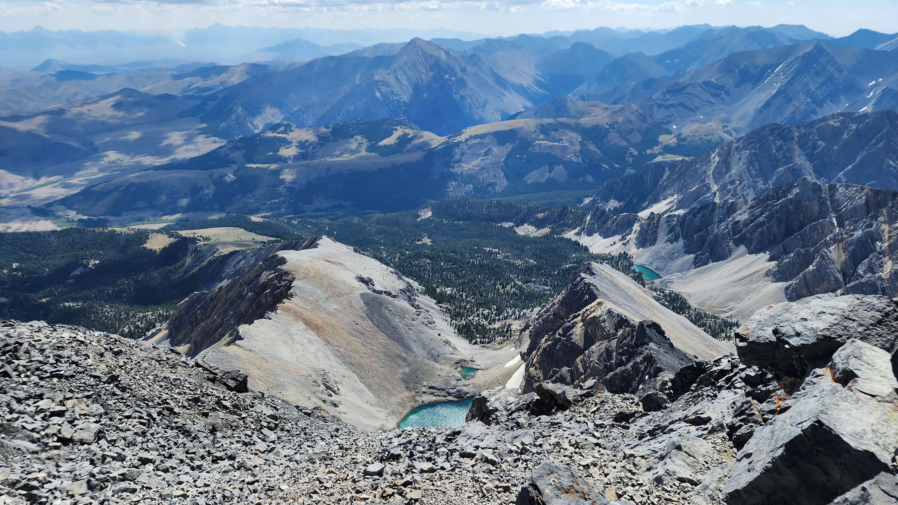

Borah Peak (Idaho)
Elevation: 12,662ft / 3,859m
Date Completed: August 3, 2025
Chronology: High point #43 of 50

Figure 1: Borah Peak's summit, as seen from the Borah Peak Trail, just before Chicken-out Ridge.

Figure 2: Tom and Ry posing at the summit of Borah Peak.
Boundary Peak is named so because the state line between Nevada and California runs through the saddle between Boundary Peak and the neighboring Montgomery Peak. The trailhead is somewhat remote--accessible only with 4WD vehicles via a network of unpaved roads that climb the nearby foothills. Because we drove from Colorado to Las Vegas in my Honda Civic, we used Turo to rent a Jeep in order to get to the trailhead. That turned out to be the right move. The only gambling we did in Vegas was deciding to leave my car overnight in a free parking garage in a mall where there were no signs saying we couldn't do so. I'm happy to say that nobody messed with my car.

Figure 3: Borah Peak, as seen from Birch Creek Road, while approaching the Borah Peak Campground.

Figure 4: The plaque at the Borah Peak trailhead.
Camping was easily do-able at the trailhead or at plenty of spots along the road. We found a great spot and set up outside of the Jeep, with plenty of time for a Mountain House beef stroganoff meal, an evening full of Irish drinking songs on a Bluetooth speaker, and a reasonably early bedtime of 10:30pm. A herd of cows were grazing near the campsite, which got awkward when I also ate some leftover steak from a Hawaiian BBQ place in Vegas.

Figure 5: Ry posing with the summit of Borah Peak in the background. This photo was taken about a half hour before the start of Chicken-out Ridge.

Figure 6: Mount Idaho, just a couple of miles south of Borah Peak.
In the morning, we hiked first along the trail as it runs adjacent to a small creek called Trail Creek. After only about 20 to 30 minutes of hiking, the trail diverges from the creek and leads into the valley below Boundary Peak (whose true summit is not yet visible).

Figure 7: The summit of Borah Peak, and Chicken-out Ridge (on the right side of the photo).

Figure 8: A notch containing a steep vertical drop along the Borah Peak Trail.
There are two common approaches to the summit of Boundary Peak. The official trail proceeds from the end of Trail Creek through the valley and then ascends the mountain at a very steep angle, with switchbacks so frequent that the trail looks like a zig-zag line going up the mountain. Based on advice in the AllTrails reviews from previous climbers, we opted instead to bushwhack across the right side of the valley and hike straight up the Trail Canyon Saddle until we met up with the Queens Canyon Trail. That trail then took us straight up to the summit on the opposite side of the ridge as the official trail.

Figure 9: The base of neighboring Mt. Idaho, showing very steep slopes with some tree growth.

Figure 10: A closer shot of Mt. Idaho, which is just two miles south of Borah Peak.
Once on top of the saddle, we took our first food break. As it turns out, this hike divides almost perfectly into three parts, and at this point we were done with the first part. From here, the Queens Canyon Trail clearly went up at a steep angle from the saddle towards a bigger foothill. We joked about how obvious it was that what we were seeing at that point was a false summit.


Figures 11-14: Scenery visible while climbing the steep section of the Queens Canyon Trail after the Trail Canyon Saddle.
After taking our first food break at the saddle, we continued hiking up via the Queens Canyon Trail. Although it's the less steep route to the summit, the Queens Canyon Trail is still pretty steep where it ascends from the saddle to a major foothill of Boundary Peak. In less than an hour and with not too much effort, we'd climbed high enough to take the photos below. The trail is visible if you zoom in on either of the photos.

Figure 15: The valley just west of Borah Peak, as soon from above.

Figure 16: The saddle of Borah Peak, as seen from above after just crossing over it.
After hiking up for about an hour, we reached the top of the foothill and got our first real, up-close view of the summit of Boundary Peak (i.e. Figure 1 at the beginning of this page). It was an amazing thing to see in person. At this point, leg two of the hike was complete. We hung out on some rocks eating jerky and dried fruit, contemplating how steep the trail ahead looked. But, we couldn't get a clear read on how spicy it would be, looking at it from this angle.

Figure 17: Another view of the saddle of Borah Peak, as seen from above after just crossing over it.

Figure 18: Ry scrambling across rocks on the final pitch of the mountain.
It wasn't as bad as we'd feared, although there was quite a lot of boulder scrambling to get to the top. There are never any real cliffs on this hike. Nowhere you could get killed with one false move, but it's still very hard work climbing up boulders this size at such a steep angle.

Figure 19: Tom poses with the wooden sign on the summit of Borah Peak.

Figure 20: Tom poses with the wooden sign on the summit of Borah Peak, after taking his helmet off.

Figure 21: The guest book on Borah Peak's summit, after Ry and Tom signed in.

Figure 22: Another view of the druid-like rock formations. On the left, the partially-defined trail can be seen.
Right next to the summit of Boundary Peak are two large rock formations that look like druids engaging in a ceremony. They came closer and closer into our view as we approached the summit. From this angle, the one on the right looks like a druid kneeling down, while the one on the left looks like he's accepting some sort of offering from the one on the right. Or... maybe it even looks like a marriage proposal. Very interesting visual.


Figures 23-26: Views from the summit of Borah Peak.


Figures 27-30: More views from the summit of Borah Peak.

Figure 31: Our climbing gear at the summit of Borah Peak.

Figure 32: A "What Would Terry Do?" sticker on the military box on the summit of Borah Peak.

Figure 33: Chicken-out Ridge, as seen just before its descent.

Figure 34: Another view of Chicken-out Ridge, as seen just before its descent.
At the summit are two different geographic markers. And, confusingly, neither of them seems to be on the highest rock on the summit. But either way, it's definitely the highest point in Nevada. As with many of the state high points, there's a box full of notebooks and comments from previous climbers to look through.

Figure 35: The biryani that I had as a last meal before the Borah climb, from Himalayan Flavor in Pocatello.

Figure 36: The second of two geographic markers at the summit of Boundary Peak.



Figures 37-40: More views from the summit of Borah Peak.

Figure 41: The final pitch to the summit of Borah Peak.

Figure 42: The final pitch to the summit of Borah Peak, zoomed in.

Figure 43: The 'alternate trail' past Chicken-out Ridge, as seen during the descent.

Figure 44: The ridge to the southwest of Borah Peak, as seen during the descent in the afternoon.